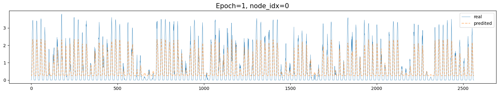
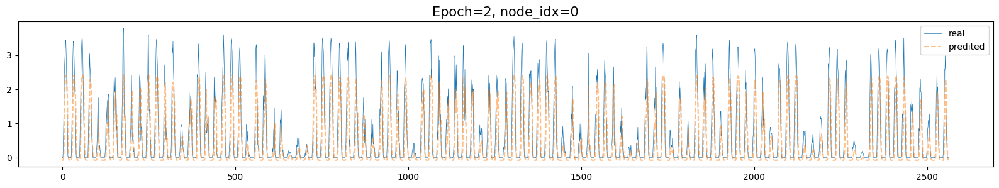
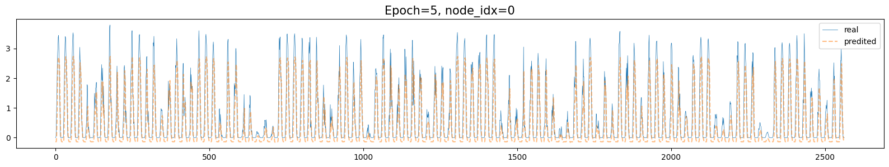
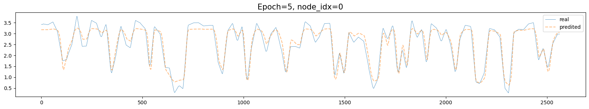
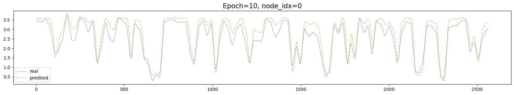
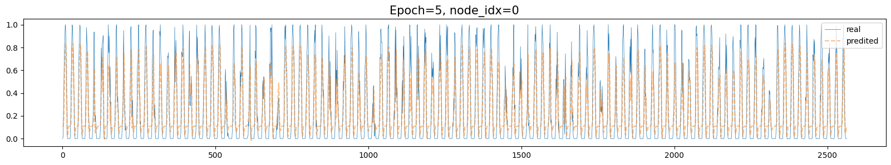

# modules
import numpy as np
import pandas as pd
import matplotlib.pyplot as plt
import seaborn as sns
import torch
import itstgcn
import itstgcn.planner
import torch_geometric_temporal
from torch_geometric_temporal.signal.static_graph_temporal_signal import StaticGraphTemporalSignal
# torch
import torch
import torch.nn.functional as F
#import torch_geometric_temporal
from torch_geometric_temporal.nn.recurrent import GConvLSTM
# from torch_geometric_temporal.nn.recurrent import GCLSTM
# from torch_geometric_temporal.nn.recurrent import LRGCN
# from torch_geometric_temporal.nn.recurrent import TGCN
# from torch_geometric_temporal.nn.recurrent import DCRNNBatch
Import
# read data
def makedict(FX,W=None,node_ids=None):
T,N = np.array(FX).shape
if W==None:
W = pd.DataFrame(FX).corr().to_numpy().reshape(-1).tolist() # corr 로 weights
if node_ids==None:
node_ids = ['node'+str(n) for n in range(N)]
_dict={
'edges':[[i,j] for i in range(N) for j in range(N)],
'node_ids': node_ids,
'weights':W,
'FX':FX
}
return _dict
class Loader(object):
def __init__(self, data_dict):
self._dataset = data_dict
def _get_edges(self):
self._edges = np.array(self._dataset["edges"]).T
def _get_edge_weights(self):
# self._edge_weights = np.array(self._dataset["weights"]).T
edge_weights = np.array(self._dataset["weights"]).T
#scaled_edge_weights = minmaxscaler(edge_weights)
self._edge_weights = edge_weights
def _get_targets_and_features(self):
stacked_target = np.stack(self._dataset["FX"])
self.features = np.stack([
stacked_target[i : i + self.lags, :].T
for i in range(stacked_target.shape[0] - self.lags)
])
self.targets = np.stack([
stacked_target[i + self.lags, :].T
for i in range(stacked_target.shape[0] - self.lags)
])
def get_dataset(self, lags: int = 4) -> StaticGraphTemporalSignal:
self.lags = lags
self._get_edges()
self._get_edge_weights()
self._get_targets_and_features()
dataset = StaticGraphTemporalSignal(
self._edges, self._edge_weights, self.features, self.targets
)
dataset.node_ids = self._dataset['node_ids']
return dataset
class RecurrentGCN(torch.nn.Module):
def __init__(self, node_features, filters):
super(RecurrentGCN, self).__init__()
self.recurrent = GConvLSTM(in_channels = node_features, out_channels = filters, K = 2)
self.linear = torch.nn.Linear(filters, 1)
def forward(self, x, edge_index, edge_weight, h, c):
h_0, c_0 = self.recurrent(x, edge_index, edge_weight, h, c)
h = F.relu(h_0)
h = self.linear(h)
return h, h_0, c_0
# device = torch.device('cuda:0' if torch.cuda.is_available() else 'cpu')
device = torch.device('cpu')
class RGCN_Learner:
def __init__(self):
self.method = 'RecurrentGCN'
self.figs = []
self.epochs = 0
self.losses = []
self._node_idx = 0
def load(self,y):
if (self.lags is None) or (self.train_ratio is None):
self.lags = 4
self.train_ratio = 0.8
self.t,self.n = y.shape
dct = makedict(FX=y.tolist())
self.loader = Loader(dct)
self.dataset = self.loader.get_dataset(lags=self.lags)
self.X = torch.tensor(self.dataset.features).float()
self.y = torch.tensor(self.dataset.targets).float()
self.train_dataset, self.test_dataset = eptstgcn.utils.temporal_signal_split(self.dataset, train_ratio = self.train_ratio)
self.len_test = self.test_dataset.snapshot_count
self.len_tr = self.train_dataset.snapshot_count
#self.dataset_name = str(self.train_dataset) if dataset_name is None else dataset_name
def get_batches(self, batch_size=256):
num_batches = self.len_tr // batch_size + (1 if self.len_tr % batch_size != 0 else 0)
self.batches = []
for i in range(num_batches):
start_idx = i * batch_size
end_idx = start_idx + batch_size
self.batches.append(self.train_dataset[start_idx:end_idx])
def learn(self,epoch=1):
self.model.train()
for e in range(epoch):
losses_batch = []
for b,batch in enumerate(self.batches):
loss = 0
self.h, self.c = None, None
for t, snapshot in enumerate(batch):
snapshot = snapshot.to(device)
yt_hat, self.h, self.c = self.model(snapshot.x, snapshot.edge_index, snapshot.edge_attr, self.h, self.c)
loss = loss + torch.mean((yt_hat.reshape(-1)-snapshot.y.reshape(-1))**2)
print(f'\rbatch={b}\t t={t+1}\t loss={loss/(t+1)}\t', end='', flush=True)
loss = loss / (t+1)
loss.backward()
self.optimizer.step()
self.optimizer.zero_grad()
losses_batch.append(loss.item())
self.epochs = self.epochs + 1
print(f'\repoch={self.epochs}\t loss={np.mean(losses_batch)}\n', end='', flush=True)
self.losses.append(np.mean(losses_batch))
self._savefigs()
def _savefigs(self):
self.__call__()
self._node_idx
with plt.style.context('default'):
plt.ioff()
plt.rcParams['figure.figsize'] = [20, 3] # [가로 크기, 세로 크기]
fig,ax = plt.subplots()
ax.plot(self.y[:,self._node_idx],label='real',lw=0.5)
ax.plot(self.yhat[:,self._node_idx],'--',label='predited',alpha=0.5)
ax.set_title(f'Epoch={self.epochs}, node_idx={self._node_idx}',size=15)
ax.legend()
#mplcyberpunk.add_glow_effects()
self.figs.append(fig)
plt.close()
def __call__(self,dataset=None):
if dataset == None:
dataset = self.dataset
self.yhat = torch.stack([self.model(snapshot.x, snapshot.edge_index, snapshot.edge_attr, self.h, self.c)[0] for snapshot in dataset]).detach().squeeze().float()
return {'X':self.X, 'y':self.y, 'yhat':self.yhat}
# learn
# def rgcn(FX,train_ratio,lags,filters,epoch):
# dct = makedict(FX=FX.tolist())
# loader = Loader(dct)
# dataset = loader.get_dataset(lags=lags)
# dataset_tr, dataset_test = eptstgcn.utils.temporal_signal_split(dataset, train_ratio = train_ratio)
# lrnr = RGCN_Learner(dataset_tr, dataset_name = 'org & arbitrary')
# lrnr.learn(filters=filters, epoch=epoch)
# yhat = np.array(lrnr(dataset)['yhat'])
# yhat = np.concatenate([np.array([list(yhat[0])]*lags),yhat],axis=0)
# return yhatLoad data
# read dataframe
df = pd.read_csv('data_eng_230710.csv')
# make y, y_upper, y_period, time, regions
y = df.loc[:,'Bukchoncheon':'Gyeongju-si'].to_numpy()
yU = df.loc[:,'Bukchoncheon_Upper':'Gyeongju-si_Upper'].to_numpy()
yP = np.divide(y, yU+1e-10)sample_codes
- 예시1: y를 학습
학습~
# step1: create lrnr object
lrnr = RGCN_Learner()
# step2: load data
lrnr.lags = 4
lrnr.train_ratio = 0.8
lrnr.load(y)
# step3: construct networks
lrnr.nof_filters = 16
lrnr.model = RecurrentGCN(node_features=lrnr.lags, filters=lrnr.nof_filters).to(device)
lrnr.optimizer = torch.optim.Adam(lrnr.model.parameters(),lr=10/1000)
# step4: learn
lrnr.get_batches(batch_size=24)
for e in range(5):
lrnr.learn()epoch=1 loss=0.623498441781415453993988
epoch=2 loss=0.097667323512046848847961
epoch=3 loss=0.083123757352316121851349
epoch=4 loss=0.081149838734851325569305
epoch=5 loss=0.080320493751313838172531 plt.plot(y[:100,0])에폭별 적합결과(\(\hat{y}\)) 시각화
lrnr.figs[0]
lrnr.figs[1]
lrnr.figs[-1]
- 예시2: yU 학습
# step1: create lrnr object
lrnr = RGCN_Learner()
# step2: load data
lrnr.lags = 4
lrnr.train_ratio = 0.8
lrnr.load(yU)
# step3: construct networks
lrnr.nof_filters = 16
lrnr.model = RecurrentGCN(node_features=lrnr.lags, filters=lrnr.nof_filters).to(device)
lrnr.optimizer = torch.optim.Adam(lrnr.model.parameters(),lr=10/1000)
# step4: learn
lrnr.get_batches(batch_size=24)
for e in range(5):
lrnr.learn()epoch=1 loss=1.98579962707536175294647
epoch=2 loss=0.202098417204133351100159
epoch=3 loss=0.052548440736393594218872
epoch=4 loss=0.0272646296531135271772957
epoch=5 loss=0.0191931016526596582006645 lrnr.figs[-1]
5번정도 더 돌려보자
for e in range(5):
lrnr.learn()epoch=6 loss=0.0169690931215882312923717
epoch=7 loss=0.0141667058247379891905975
epoch=8 loss=0.0124263072353896015870743
epoch=9 loss=0.0103476242200189951082373
epoch=10 loss=0.009508996026937005688799 lrnr.figs[-1]
- 예시3: yP 학습
# step1: create lrnr object
lrnr = RGCN_Learner()
# step2: load data
lrnr.lags = 4
lrnr.train_ratio = 0.8
lrnr.load(yP)
# step3: construct networks
lrnr.nof_filters = 16
lrnr.model = RecurrentGCN(node_features=lrnr.lags, filters=lrnr.nof_filters).to(device)
lrnr.optimizer = torch.optim.Adam(lrnr.model.parameters(),lr=10/1000)
# step4: learn
lrnr.get_batches(batch_size=24)
for e in range(5):
lrnr.learn()epoch=1 loss=0.030719049366970748393135
epoch=2 loss=0.0119630681123411254793358
epoch=3 loss=0.0109235838672882638420868
epoch=4 loss=0.0107088599754714682600975
epoch=5 loss=0.0105961727974719788335514 lrnr.figs[-1] 